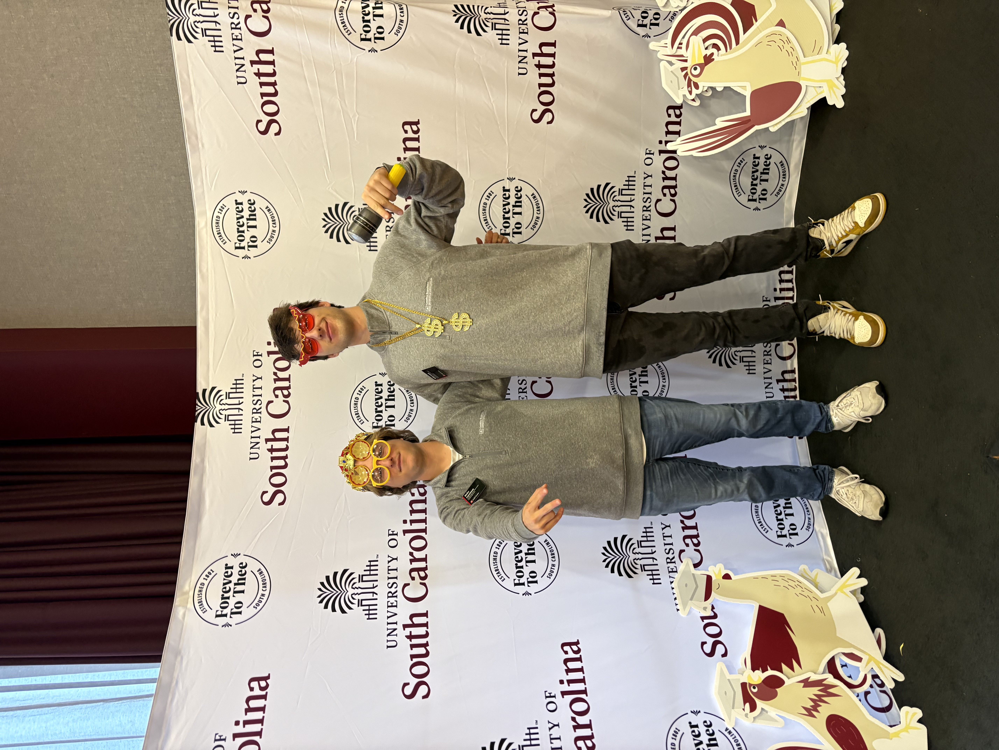

Shortly after starting my role as a Carolina Experience Peer Leader, most of my early consultations felt simple enough. Students would come in asking about internship advice, reaching out to a professor, or asking what to do when they felt behind. I treated these moments like small puzzles. I would identify the issue, match it to the right resource, and send them on their way. Each conversation felt the same, and being quick and efficient with my appointments meant I was succeeding at the job.
But one day, a student sat down across from me and said they were “fine,” even though everything about their posture said otherwise. Their story shifted from a missed assignment to feeling isolated, unsure, and afraid of disappointing everyone back home. I remember shifting into a different mode. Not the quick, procedural one I had relied on, but something slower and more careful. They didn't need anything informational from me; in a moment of vulnerability, all they needed was someone they could trust and who would listen.
That moment echoed something I had been learning in CSCE 522: Information Security Principles, Professor Farkas, Fall 2025. We spent weeks discussing confidentiality, integrity, and the responsibilities that come with handling sensitive information. I had always thought of those principles in terms of data such as passwords, access logs, and encryption keys. But by sitting with that student, I came to understand them in a new way. The confidentiality I practiced in that room wasn't enforced by algorithms or protocols. It was enforced by presence, empathy, and the promise that what they shared wouldn't be mishandled. It was the most human form of information security I had ever encountered.
This connection deepened when I thought back to discussions from CSCE 390: Professional Issues in Computing and Engineering, Professor Valtorta, Fall 2024. We talked about ethical stewardship, about how the systems we build only matter if they serve people responsibly. I used to think of those conversations as important, but distant from the day-to-day work of being a student. In my peer leader role, those ideas became real because a student was not just asking for help. They were trusting me with part of their life, and my response shaped their experience of the university just as a design choice shapes how a user experiences a system.
After that realization, I started noticing the smaller details of every interaction. The pause before someone admits they're struggling. The relief when they realize they're not being judged. The way a single moment of understanding can shift the entire tone of a conversation. These were not simply emotional cues but signals, the same way logs or alerts guide a security system. They reminded me that my role was not to fix the student but to help them move through their situation safely.
Piece by piece, these experiences began to connect with my coursework in ways I hadn't expected. In information security, we talk about minimizing harm, anticipating vulnerabilities, and designing systems that protect people even when they don't know they need protecting. In my peer leader role, I was doing the same thing, only without the code. I learned that a system, whether technical or human, succeeds only when the people inside it feel safe, respected, and supported.
What I learned in my classwork was not separate from what I practiced in the CEPL office, and the security and ethical principles from Professional Issues became practical the moment students trusted me with personal concerns. The same ideas about protecting what is vulnerable and acting with integrity are still present. It was never just answering questions or learning about encryption or ethics. It was always about building frameworks, emotional or technical, that help someone move through a process without feeling lost. Every choice I made, whether in a consultation or a class project, shaped an experience for someone else, and realizing that changed how I see myself as both a leader and a future CIS professional. My CEPL role taught me that the heart of information security is not the technology. It is the people behind it. It taught me that confidentiality is not just a policy but a promise, and it showed me that the professional I want to become is someone who uses technical knowledge to guide others safely, ethically, and with genuine care.
Images

A photo from the Countdown to Commencement event hosted by the Carolina Experience, where I had the opportunity to share my experiences and insights and provide information about the office. It was a moment of reflection and celebration, highlighting the journey of growth and learning that defines my experience.
We had a roleplay during our training where we practiced responding to different student scenarios, demonstrating empathy and support skills. This photo captures a moment of that training, where I was practicing how to respond to a student who was struggling with feeling behind in their coursework.
Artifacts
Within the Classroom
CSCE 390 Ethics Presentation
For this project, we chose an ethical dilemma related to information security and analyzed it through the lens of the principles we learned in class. We discussed the potential harms, the stakeholders involved, and how we would approach the situation as professionals. This project helped me understand how ethical considerations are not just theoretical but deeply connected to real-world decisions and actions.
This section of the exam covered confidentiality, integrity, and authenticity in information security. I chose this artifact because it represents a moment where I had to apply the principles we learned in class to analyze a complex scenario. The questions challenged me to think critically about how to protect sensitive information and anticipate potential vulnerabilities, which are skills that directly relate to my experiences as a peer leader and my future career in CIS.
This document was created at the end of the year to capture the themes and insights from our consultations throughout the year. It includes reflections on common challenges students faced, the strategies we used to support them, and the resources each cohort of students needed at different points in the year. This artifact represents the culmination of my experiences as a peer leader and the lessons I learned about how to effectively support students in a way that is empathetic, practical, and responsive to their needs. It also shows how the principles of confidentiality and care that I learned in class were applied in real-world situations to help others navigate their challenges.
This reflection was written at the end of our training as peer leaders. It captures my thoughts and feelings about the training process, the skills I developed, and how I planned to apply what I learned in my role as a peer leader. This artifact is important to me because it represents a moment of growth and self-awareness, where I recognized the importance of empathy, active listening, and confidentiality in supporting my peers. It also shows how principles learned in class were directly relevant to experiences outside of the classroom, reinforcing the connection between academic learning and real-world application.